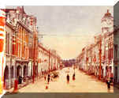

呂清夫 撰文

如果耍使台北更加令人留戀，那麼，第一件事恐怕是要多種樹木，像偌大的國父紀念館或中止堂四周，都有待大量的種樹。因為像凡爾賽宮、日本皇宮，莫不掩映在蒼松翠柏之中，森林絕不會掩去這些建築物的王者氣象，反而使它更為壯觀。至於鑽石地帶的忠孝東路，居然感覺不到半點綠意，新闢的街道竟然不如既有的仁愛路，這實在有點說不過去。雖然說是商業區，但中山北路的綠意盎然，只有使它更為近悅遠來，想想看，巴黎的繁華如果沒有法國梧桐的處處陪襯，不知將要多麼單調！除了樹木以外，目前台北的建設應該減多於加，虛重於實，突出地面的捷運系統便不如挖空的地下鐵，陸橋也不如地下道，多蓋房子又不如多設池塘噴泉。台灣地區十分炎熱，池塘噴泉至為必要，可惜台北街頭很難得看到噴水池。在我們天文數斂字的工程建設中，挖幾個噴水池應屬九牛一毛，卻有可能使得行人、騎士火氣為之一降。至於公共建築則可少蓋一點、節省一點。光復以後才建造過議會大廈，為什麼現在又要重蓋一間呢？你說不夠大嗎？那麼，當初為什麼不蓋大一點？光復前蓋的總統府為什麼現在都不需要新蓋一間呢？始亂「終棄」的建築物不但不實用，也可能毫無美感可言，那只有等待拆除大隊的光臨了。另外，街頭招牌最好少掛一點，或掛小一點，最好像歐洲那樣，不要凸出建物表面，如此才會安全又美觀。地下道也不要再讓小學生去畫什麼反毒海報或裝飾田案，因為小孩可能為賦新辭強說愁。地下道只要去除垃圾髒亂、去除漏水積水就功德無量了，不必增加什麼。如果要美化地下道或小學圍牆之類，請不耍累壞童工，還是交給美工專家去做才好。只有重用專家，台北的景觀才會更好！原載1991.9.7.中國時報